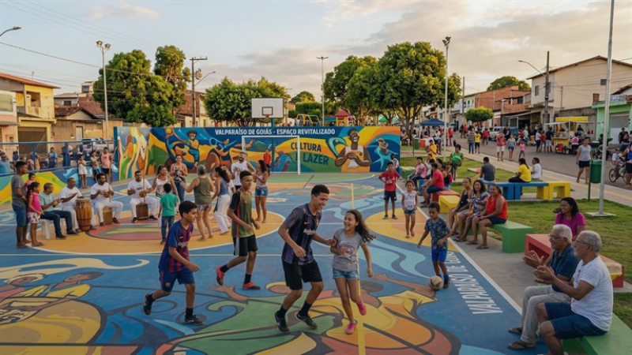

Programmes Structurants d'Impact Social
Programmes Structurants d'Impact Social
Des actions de terrain continues pour l'émancipation humaine, la citoyenneté active et la sortie durable de la grande précarité.

Éducation Intégrale
Actif / En Développement
Novos Caminhos — Éducation & Citoyenneté
Soutien scolaire intensif en lecture et calcul, ateliers d'informatique, robotique libre et suivi psychologique pour les élèves défavorisés.
Território: Valparaíso de Goiás (Quartiers Céu Azul, Anhanguera et Ipanema)
< 1.8%
Décrochage Scolaire Inférieur à
18
Élèves Primés aux Concours
1 840h
Heures de Soutien / An

Sécurité Alimentaire
Actif / Continu
Prato que Transforma — Nutrition & Jardins Partagés
Lutte contre la malnutrition chronique grâce à des cantines solidaires, des jardins potagers urbains et des ateliers d'alimentation saine.
Território: Valparaíso de Goiás et Cidade Ocidental
145 000
Repas Équilibrés Servis / An
240
Potagers Partagés Actifs
68 ton
Tonnes de Légumes Récoltées

Insertion Productive
Actif / Inscriptions Ouvertes
Renda e Futuro — Insertion & Économie Sociale
Formations techniques en confection textile, boulangerie artisanale et bureautique, complétées par un accompagnement au microcrédit.
Território: Agglomération de la Périphérie de Brasília
64%
Diplômés Immatriculés Déclarés
42
Activités Artisanales Incubées
+74%
Hausse Moyenne du Revenu Foyer

Infrastructures Locales
Actif / Participatif
Comunidade Viva — Aménagement & Solidarité
Chantiers collectifs de réhabilitation d'espaces verts, sécurisation de l'éclairage public et réunions de quartier participatives.
Território: Valparaíso de Goiás (Secteurs Céu Azul et Anhanguera)
12
Espaces Publics Rénovés
620
Habitants Mobilisés sur Chantiers
-38%
Baisse des Incidents de Quartier